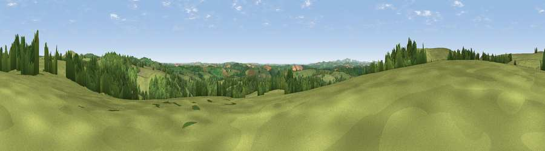

Viewpoint near Cardinham
#13182 in England · top 27% of its area beats it · near CardinhamWhere it is
The exact computed spot (SX 14175 69525). Click the marker for map links.
The view, rendered

A 360° render of this exact spot computed from the terrain model, tree cover and land cover — summer colours, afternoon light, calibrated against photographs of famous viewpoints. Real trees, hedges and buildings will differ in detail.
The panorama
Grey silhouette: terrain skyline in each direction (720 bearings, Earth curvature and refraction included). Dashed green: skyline with trees (+15 m) and buildings (+8 m) as obstacles. Blue strip: how far the ground is visible on each bearing.
Where the view opens
Wedge length = distance to the farthest visible ground on that bearing (vegetation-aware). Rings at 10, 25 and 50 km.
What fills the view
74% grassland · 22% woodland · 3% cropland
Angular shares of the visible panorama (visual magnitude), not map area. Landscape diversity 0.31 (0–1 Shannon).
Key numbers
More beautiful places nearby
The staircase of upgrades: each row has a higher view potential than everything closer. Driving times are estimates from straight-line distance, calibrated against real road routing — check an actual route before setting out.
| Place | Direction | Drive | Score |
|---|---|---|---|
| Viewpoint near Cardinham | W · 1 km | ~2 min | 71.1 |
| Berry Down | E · 6 km | ~12 min | 73.5 |
| Brown Willy | N · 11 km | ~20 min | 77.3 |
| Caradon Hill | E · 13 km | ~24 min | 78.5 |
| Viewpoint near Port Isaac | NW · 16 km | ~28 min | 79.7 |
| Bin Down | SE · 18 km | ~31 min | 80.2 |
| Viewpoint near Trethurgy | SW · 18 km | ~32 min | 84.1 |
| Viewpoint near Stenalees | SW · 18 km | ~32 min | 88.0 |
50.49598, -4.62140 · source: screening · position refined by local search. Computed location — check access rights before visiting.